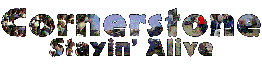
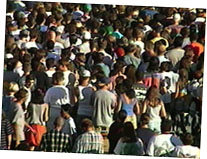
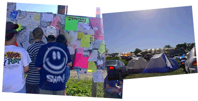
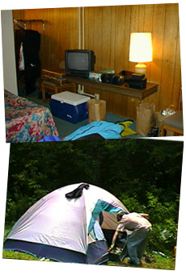
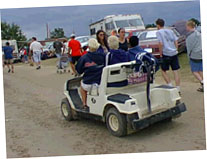
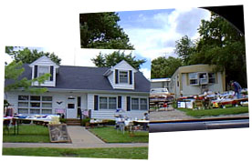

|
 |
 |

| Cornerstone: Welcome!
It's more than a music party -- Tucked behind the underground tent are Cornerstone's ArtRageous and Imaginarium exhibits. Authors, painters, and others of a creative bent can enjoy conferences, discussion, and great coffee. The midnight film festival was cool, too...
So much music, so little time... Sob! Here's a peek at some of the cool stuff I stumbled across over the course of the festival. Some oldies and some fresh stuff -- no matter what the genre, it's hot stuff.
Follow the adventures of Squeaky the Duck on his adventures at the fest. From his near-death experience at the hands of Kevin131 to a DC Talk sighting, he's been almost everywhere.
Well, T-shirts, too. Cornerstone is a great place to find a variety of wacky hairstyles, and most of the owners are good natured sorts who're quite willing to offer their coifs for a good cause -- this page, for one!
What do you get when you put a bunch of music-obsessed usenet junkies in one place? Vibrating hairrushes. That's what. The fourth annual RMC Cornerstone picnic is here, captured in bits and bytes for all of posterity...
Oh, Oh... Stayin' Alive! Whether it's beating the heat, finding munchies, or selecting that perfect camping site, there's someone who's been through it and has some words of wisdom to offer. Recorded here for posterity are essential Cornerstone survival skills. |
The classic advice to new fest-goers is to be ready for anything. Weather in particular is unpredictable! In '95, torrential rains turned the ground into ankle-deep mud. In '96, hot beating sun and twenty thousand feet made for clouds of dust in the air. We were fortunate in '97, with relatively mild weather and only one day of light rain. But who knows what the future holds? It's good to bring along some basic gear to keep you through whatever weather anomolies pop up. Sunblock and insect repellant, a good pair of shades and a hat, comfortable walking shoes, and a good pair of boots are all handy. Long pants, shorts, T-shirts and sweatshirts and jackets... all are good to have around. Be sure the clothes are ones you can get dirty without runing them, too. Finally, disposable plastic rain ponchos can be a Godsend -- they're tiny, easy to whip out when sudden storms hit, and can be purchased for only a dollar or two at most hardware stores. Are there crowds? You'd better believe it! If you're there with a friend (or a gang of friends), finding each other and keeping in touch throughout the day can be a challenge. The best approach is to schedule a few times to meet throughout the day; five o'clock at the exhibition tent, outside the showers after the Five Iron Frenzy show, etc. If you're camping, it's even easier -- you've already got a convenient place to meet. If you're trying to meet a friend who's there at the fest, but can't figure out where to find them, there are a number of message boards and convenient walls scattered around the fest grounds. One of the most popular message boards is located at the entrance, and a small crowd can usually be found gathered around it, posting messages or looking for notes.  Deciding where to stay is a biggie as well. Many Cornerstone die-hards insist that camping is the only way to go, but the popularity of motel and hotel rooms can't be disputed. Cornerstone people usually book up all the rooms in a 40-mile radius months before the fest. If you choose to get a room, be sure to start calling around early. The official Cornerstone site has a helpful list of Bushnell-area accomodations, and asking around on rec.music.christian usually yields tips on good places to stay. If you're camping, be sure to get there early. There's only so much space (especially good camping space) and it fills up fast. If you arrive after the prime spots have already been snatched up, check the hills by main stage and the lake; the ever-present threat of rolling in your sleep beats setting up camp next to the rows of portable toilets! For some reason, those spots are always the last to go... Also be sure to bring along a sleeping bag or cot, warm clothes for (potentially) cold nights, plenty of insect repellant, a camp stove and an ice chest. Lawn chairs are another good idea; they're handy around camp, and can be carried to mainstage concerts for seating that's moer comfy than the hill. It's possible to get by without these niceties, but they'll make your life far easier. Golf carts, some say, are Cornerstone's native life form. They can be found zipping around the fest-grounds, reserved for staff who need to get aroudn quickly. But take a look at the one zooming by in the photo -- there's a lot of wasted space on that puppy! Enter Cart-hopping, Cornerstone's official sport. Need a ride to Mainstage and don't feel like walking? Plead to passing carts and wait until a driver takes pity. In the fest's friendly atmosphere, it doesn't take long at all, and it's a great way to meet interesting people. I've seen carts with five, six, even seven people piled on -- ettiquete, of course, forbids jumping on without permission. Other random survival gear is handy for those who live by the Girl Scout motto (always prepared...). A flashlight, a backpack or fanny-pack to carry stuff around when you're not at the car or your tent, and handy-wipes are all good to have around. For sudden snack-attacks, you can either carry along your own food or hit the various fast-food places that set up stands on the fest grounds. Pizza hut, subway, ostrich burgers... they're all there. Snacks and assorted supplies (bug spray, batteries, candles, etc) can be purchased at the Hyvee tent each year, as well. If you're out for bargains, you can also tour Bushnell itself; dozens and dozens of garage sales line the streets of the city. Ben and his friends snagged some great deals on everything from clothes to a spotlight for the top of their fan by cruising the sales, and some long-time Cornerstone folks consider it one of the best kept secrets of the fest. |
|
|
|